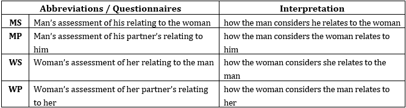

Οι υγιείς σχέσεις είναι ευεργετικές στη ζωή κάθε ατόμου, όπως η συμβολή στη σωματική και ψυχική του υγεία, προσωπική, οικογενειακή, επαγγελματική και κοινωνική ευημερία και ποιότητα ζωής. Ως εκ τούτου, ταυτοποίηση πιθανές δυσκολίες στις διαπροσωπικές σας σχέσεις είναι υψίστης σημασίας καθώς θα είναι η αρχή δείχνουν προς εργαστείτε και βελτιώστε αυτές τις δυσκολίες. Θυμηθείτε ότι η μεγαλύτερη διαχρονική μελέτη στον κόσμο για την ευτυχία, που ξεκίνησε το 1938 στο Πανεπιστήμιο του Χάρβαρντ, κατέληξε στο συμπέρασμα ότι «οι καλές σχέσεις μας κάνουν ευτυχισμένους και υγιείς» (Waldinger & Schulz, 2023).
PROQ3
Το ερωτηματολόγιο The Person's Relating to Others Questionnaire (PROQ3) έχει σχεδιαστεί για να διερευνά διάφορα αρνητικά συναισθήματα και τις στάσεις που μπορεί να έχουν οι άνθρωποι απέναντι στους άλλους. Βασίζεται στη Relating Theory, η οποία αντιπροσωπεύει δυσλειτουργικές σχέσεις σε οκτώ διαστάσεις και τις οπτικοποιεί χρησιμοποιώντας ένα οκτάγωνο. Κάθε τμήμα του το οκτάγωνο αντιστοιχεί σε α διαφορετικό σχεσιακό μοτίβο. Όσο πιο σκοτεινό είναι ένα τμήμα, τόσο πιο αρνητικές είναι οι σχέσεις που αντιπροσωπεύει.
Τα αποτελέσματα παρουσιάζονται σε δύο μορφές:
- Αριθμητικές βαθμολογίες για τις οκτώ διαστάσεις του οκτάγωνου.
- Μια γραφική αναπαράσταση του οκτάγωνου, τονίζοντας περιοχές με δυσλειτουργικές σχέσεις.
Παράδειγμα


CREOQ3
Το ερωτηματολόγιο του ζευγαριού για τις σχέσεις μεταξύ τους (CROQ3) έχει σχεδιαστεί για να διερευνά διάφορα αρνητικά συναισθήματα και στάσεις που μπορεί να έχουν οι άνθρωποι απέναντι στον σύντροφό τους. Βασίζεται στη Relating Theory, η οποία αξιολογεί τις δυσλειτουργικές σχέσεις μεταξύ των συντρόφων χρησιμοποιώντας οκτώ διαστάσεις της σχέσης. Δυσλειτουργικό σχέσεις είναι επίσης παριστάνεται γραφικά μέσα από τέσσερα οκτάγωνα, όπου κάθε τμήμα αντικατοπτρίζει ένα από τα οκτώ σχεσιακά μοτίβα. Συγκεκριμένα, κάθε τμήμα του οκτάγωνου αντιστοιχεί σε έναν μοναδικό τρόπο σχέσης.
Τα τέσσερα οκτάγωνα προέρχονται καθώς το CROQ3 αξιολογεί τον τρόπο με τον οποίο κάθε συνεργάτης σχετίζεται με τον σύντροφό του (Αυτοαξιολόγηση) και πώς αντιλαμβάνεται ο κάθε εταίρος τον σύντροφό του σχετίζεται μαζί του (Partner Assessment).
Τα αποτελέσματα παρουσιάζονται με δύο τρόπους: (α) Αριθμητικά, με βαθμολογίες για τις οκτώ (8) διαστάσεις/τύπους των σχετικών (που αντιπροσωπεύονται από τα οκτώ αντίστοιχα τμήματα του Οκτάγωνου) για καθένα από τα τέσσερα (4) οκτάγωνα. (β) Γραφικά, με διάγραμμα τεσσάρων (4) οκτάγωνων, όπου οι σκιασμένες τομές αντιπροσωπεύουν το θέσεις/τμήματα του Οκτάγωνο που παρουσιάζουν αρνητικές ή δυσλειτουργικές σχέσεις. Όσο πιο σκοτεινό είναι το τμήμα του οκτάγωνου, τόσο πιο αρνητικές οι σχέσεις που αντιπροσωπεύει αυτή η θέση.

Τα αποτελέσματα παρουσιάζονται με δύο τρόπους: (α) αριθμητικά, με βαθμολογίες για τις οκτώ (8) διαστάσεις (απεικονίζεται σε οκτώ αντίστοιχα οκτάγωνα του οκτάγωνου) για καθένα από τα τέσσερα (4) οκτάγωνα. και (β) γραφικά, με διάγραμμα τεσσάρων (4) οκτάγωνων, το οποίο απεικονίζει ως σκιασμένες περιοχές τις οκτάδες του οκτάγωνα όπου αρνητικά - παρατηρούνται δυσλειτουργικές σχέσεις. Όσο πιο σκιασμένη περιοχή στο οκτάγωνο, τόσο πιο δυσλειτουργική που σχετίζονται με τη συγκεκριμένη διάσταση.
Παράδειγμα


FMIQ
Το ερωτηματολόγιο για τα μέλη της οικογένειας (FMIQ) είναι παράγωγο του CREOQ3 και αφορά αλληλεπίδραση μέσα στις οικογένειες.
Παρόμοια με το CREOQ3, μετρά συγκεκριμένα τη σχέση μεταξύ δύο καθορισμένων μελών (σε αυτό υπόθεση, μέλη της οικογένειας). Έτσι, ένα ερωτηματολόγιο αυτοαξιολόγησης αξιολογεί τον τρόπο που κάθε μέλος της οικογένειας σχετίζεται με το άλλο και ένα ερωτηματολόγιο αξιολόγησης άλλων αξιολογεί τον τρόπο που κάθε μέλος της οικογένειας αντιλαμβάνεται πώς σχετίζεται ο άλλος μαζί του/της.
Περιλαμβάνει ένα σύνολο 16 ερωτηματολογίων οκτώ κλίμακας των 48 ερωτήσεων το καθένα, για τη μέτρηση των αρνητικών μορφών και των δύο που σχετίζονται με τον εαυτό και τους άλλους μέσα στην οικογένεια.
| Αρχικά γράμματα ενός ονόματος | Αλληλεπίδραση μέσα σε μια αλληλεπιδρούσα δυάδα |
|---|---|
| Πατέρας – Κόρη | |
| FaSeD | Η εκτίμηση του πατέρα για τον εαυτό του σε σχέση με την κόρη του |
| FaDa | Η εκτίμηση του πατέρα για την κόρη του |
| Πατέρας - Γιος | |
| FaSeS | Η εκτίμηση του πατέρα για τον εαυτό του σε σχέση με τον γιο του |
| FaSo | Η εκτίμηση του πατέρα για τον γιο του |
| Μητέρα – Κόρη | |
| MoSeD | Η εκτίμηση της μητέρας για τον εαυτό της σε σχέση με την κόρη της |
| MoDa | Η εκτίμηση της μητέρας για την κόρη της |
| Μητέρα – Γιος | |
| Μωυσής | Η εκτίμηση της μητέρας για τον εαυτό της σε σχέση με τον γιο της |
| MoSo | Η εκτίμηση της μητέρας για τον γιο της |
| Κόρη - Πατέρας | |
| DaSeF | Η εκτίμηση της κόρης για τον εαυτό της σε σχέση με τον πατέρα της |
| DaFa | Η εκτίμηση της κόρης για τον πατέρα της |
| Κόρη - Μητέρα | |
| DaSeM | Η εκτίμηση της κόρης για τον εαυτό της σε σχέση με τη μητέρα της |
| DaMo | Η εκτίμηση της κόρης για τη μητέρα της |
| Υιός – Πατέρας | |
| SoSeF | Η εκτίμηση του γιου για τον εαυτό του σε σχέση με τον πατέρα του |
| Καναπές | Η εκτίμηση του γιου για τον πατέρα του |
| Γιος – Μητέρα | |
| SoSeM | Η εκτίμηση του γιου για τον εαυτό του σε σχέση με τη μητέρα του |
| SoMo | Η εκτίμηση του γιου για τη μητέρα του |
Το FMIQ για μια τριμελή οικογένεια
Το σχήμα δείχνει μια ενδεικτική εκτύπωση της αλληλοσυσχέτισης του FMIQ σε μια οικογένεια που περιλαμβάνει μια μητέρα (Μ), πατέρας (F) & παιδί (Γ).
Τα οκτάγωνα είναι διατεταγμένα σε τέσσερα σετ των τεσσάρων, καθένα από τα οποία σχηματίζει μια γωνία γύρω από το καθορισμένο πρόσωπο. Σε κάθε γωνία, τα δύο εσωτερικά οκτάγωνα απεικονίζουν την αυτοσυσχέτιση του ερωτώμενου με το άτομο που οι όψεις του οκτάγωνου, ενώ τα δύο εξωτερικά οκτάγωνα απεικονίζουν την αντίληψη του ίδιου ερωτώμενου για το πώς αυτά πρόσωπα που σχετίζονται μαζί του/της.

Το FMIQ για μια τετραμελή οικογένεια
Το σχήμα δείχνει μια ενδεικτική εκτύπωση της αλληλοσυσχέτισης του FMIQ σε μια οικογένεια που περιλαμβάνει μια μητέρα (M), ένας πατέρας (F), ένα παιδί (C1) και ένα δεύτερο παιδί, το αδερφάκι (C2).
Τα οκτάγωνα είναι διατεταγμένα σε τέσσερα σετ των τεσσάρων, καθένα από τα οποία σχηματίζει μια γωνία γύρω από το καθορισμένο πρόσωπο. Σε κάθε γωνία, τα δύο εσωτερικά οκτάγωνα απεικονίζουν την αυτοσυσχέτιση του ερωτώμενου με το άτομο που οι όψεις του οκτάγωνου, ενώ τα δύο εξωτερικά οκτάγωνα απεικονίζουν την αντίληψη του ίδιου ερωτώμενου για το πώς αυτά πρόσωπα που σχετίζονται μαζί του/της.